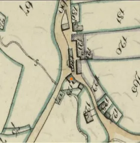
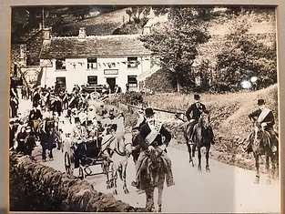
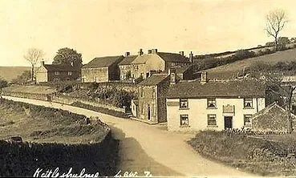
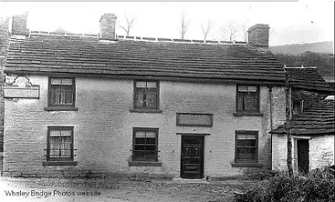
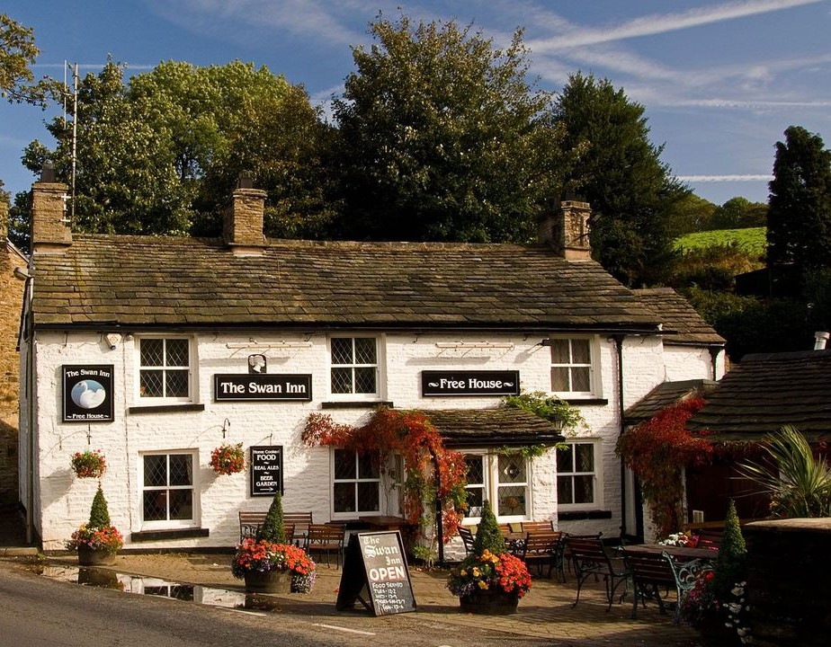
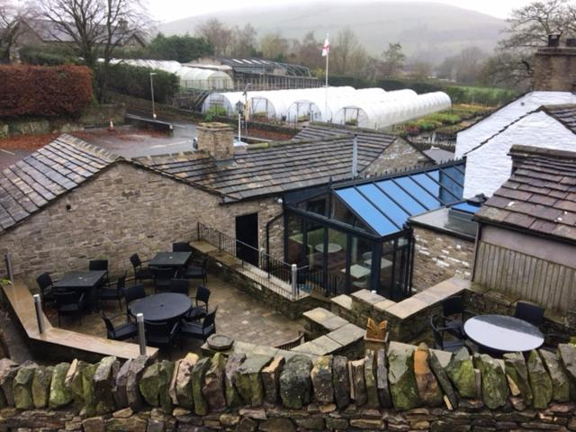

|
In the shadows of history, the Swan emerges as a resilient relic of centuries past, shrouded in the mists of time. The tale of this venerable establishment begins with a claim to a fifteenth-century coaching inn, a claim substantiated by its architectural echoes from that bygone era. However, the annals of its early existence remain veiled, with documented records scarce until the 1840s. Skipping through the pages of an 1829 directory of Cheshire, one finds a notable absence of Kettleshulme, leaving the Swan to linger in the background of historical documentation. A hypothesis emerges - perhaps it served as an Ale House long before this directory, positioned strategically on the salt road, a bustling conduit linking Nantwich in Cheshire to the bustling towns and cities of Yorkshire. This ancient thoroughfare undoubtedly bore witness to the comings and goings of countless traders and travelers, seeking respite at various stops along its well-trodden route. A fascinating detail unfolds on the map as the present main road cuts a peculiar angle, a testament to the Swan's enduring presence. Constructed in 1770 by the Whaley Bridge and Macclesfield Turnpike Trust, the road raises intriguing questions about the Swan's temporal origins. Did the Swan stand sentinel to passing coaches before the advent of this turnpike road? A curiously titled 'Smithy Door' in the 1841 census, the Swan cozied up to the village smithy, unveiling an intimate connection to the local trades. The narrative gains momentum with the Dewsnap family taking the helm. In 1851, the Swan proudly declares itself the 'Swann Inn,' a subtle twist of fate mirrored in the name of John Dewsnap's son, Swann. The familial saga unfolds through the diligent hands of Johnathan and Hugh, who, until 1881, steered the Swan as registered licensees. The subsequent chapter introduces Martha, a matriarchal figure who, after marrying John Thomas Boothby, gracefully assumed the role of landlady. Her resilient stewardship carried the Swan through the turn of the century, marked by the poignant image of Martha's name displayed above the door in the second picture from that era. The Boothby legacy endured, with Martha's son Sampson shouldering the responsibility, even amidst the tumult of WWI. The post-war era saw a succession of licensees, including Mrs. Kay in the 50s and 60s, Gwyn Williams in the 70s, and John Adamson in the 80s and 90s, steering the Swan through the turn of the millennium. The dawn of the 21st century cast an uncertain shadow as the Swan faced closure in 2004, contemplating a transformation into a residence. Salvation, however, arrived in the form of a community-driven initiative. In a historic move, 21 local residents formed a consortium, securing the Swan's future by purchasing its freehold. This pioneering endeavor preserved a local gem from the brink of extinction, an act of valor that reverberated through the village. The year 2006 marked a collaborative alliance as we joined forces, infusing new life into the Swan. A catering kitchen heralded the modernization of this historic establishment, and by 2008, we proudly held the freehold. Architectural evolution unfolded with the addition of a new dining room and kitchen, setting the stage for future developments. October 2021 heralded the commencement of the next phase, a testament to our commitment to the Swan's enduring legacy. Explore our Moving Forward page for a glimpse into the ongoing transformation, as we ensure the Swan's place in the modern narrative while honoring its rich history. |
|
Old Map |
The Village Fete Circa 1892 |
An older picture of the pub |
An old picture of the pub |
A newer picture of the pub |
A recent rear view |